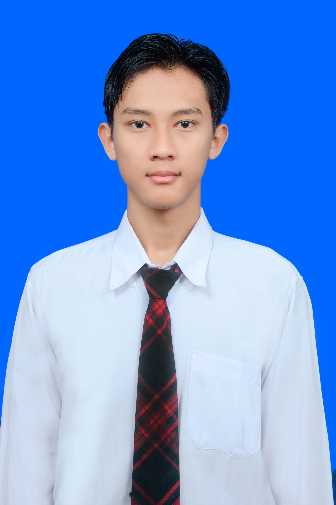

Mhycka Herviananda Yuwono
24050630001

Nasywa Amanda Saputri
24050630002
Underwater Welding Safety
Mhycka Herviananda Yuwono
24050630001
Nasywa Amanda Saputri
24050630002
Pengelasan bawah laut adalah teknik vital dalam industri kelautan dan lepas pantai. Teknik ini memungkinkan pengelasan dilakukan di bawah air untuk memperbaiki struktur seperti pipa, kapal, atau anjungan minyak. Pengelasan bawah laut memanfaatkan alat khusus yang dirancang untuk berfungsi di lingkungan bertekanan tinggi dan basah.
Pengelasan bawah laut memerlukan keahlian tinggi karena pengelasan di lingkungan bertekanan tinggi dan basah sangat menantang. Para ahli las harus menguasai teknik khusus untuk memastikan hasil las yang aman dan tahan lama.
Metode ini sangat penting untuk menjaga keberlanjutan infrastruktur kelautan dan industri energi. Selain itu, pengelasan bawah laut juga mendukung perawatan lingkungan dengan memperbaiki kerusakan tanpa perlu memindahkan struktur besar ke darat.